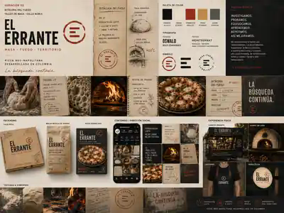

Bitácora El Errante
Una búsqueda documentada.
La cocina avanza cuando las pruebas dejan algo más que un resultado. Registramos preguntas, variables, errores, comparaciones y decisiones alrededor de harina, fermentación, frío, producto y fuego.
Temporada 01
La masa que no encontrábamos.
La primera temporada sigue el desarrollo de Aire y Tiempo y las preguntas que aparecieron al intentar construir una masa propia.
Preguntas que abren el camino
El contenido comienza donde una instrucción deja de ser suficiente.
No escribimos para presentar una versión definitiva del conocimiento. Escribimos para hacer visible el camino hacia una mejor pregunta.
La harina no es únicamente harina
Cómo fuerza, absorción y extensibilidad modifican el proceso y el resultado.
El tiempo no fermenta solo
La relación entre temperatura, levadura, masa y cronograma.
Más agua no siempre es mejor
Qué cambia cuando aumenta la hidratación y qué debe sostener la estructura.
Abrir sin expulsar todo el aire
Tensión, delicadeza y lectura de la masa durante la apertura.
Qué revela el borde
Color, volumen, textura y cocción como señales de todo lo que ocurrió antes.
Congelar sin detener el aprendizaje
Variables que cambian cuando la masa o la pizza pasan por frío.
Nuestro método editorial
Preguntar, probar, interpretar y compartir.
Cada contenido conecta una duda del taller con una receta, herramienta o producto que permita seguir explorando.
Preguntar
Partimos de problemas reales o dudas frecuentes de quienes cocinan nuestros productos.
Probar
Registramos condiciones, variables, resultados y señales relevantes.
Interpretar
Explicamos qué puede aprenderse y qué todavía no puede concluirse.
Compartir
Traducimos el aprendizaje en métodos que otras manos puedan repetir y ajustar.
De leer a probar
La Bitácora no termina en una conclusión.
Cada capítulo debe conducir a una nueva observación: una receta para ejecutar, una herramienta para calcular o un producto para comparar.
El valor no está en memorizar una cifra. Está en comprender qué cambia cuando cambia el contexto.